-
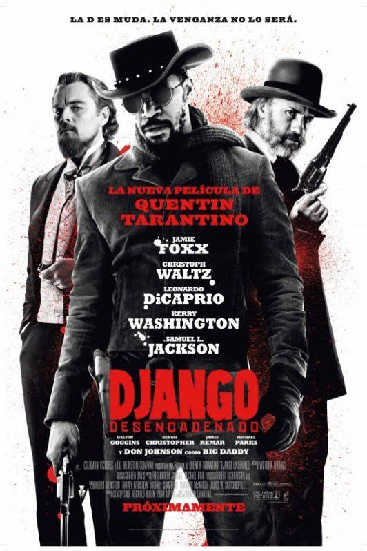
Django desencadenado
Un esclavo liberado (Jamie Foxx) es entrenado por un cazarrecompensas alemán (Christoph Waltz). Tras realizar algunos trabajos juntos, el protagonista se embarca en la misión de liberar a su esposa, todavía esclavizada por el malvado propietario de una plantación (Leonardo DiCaprio).
-
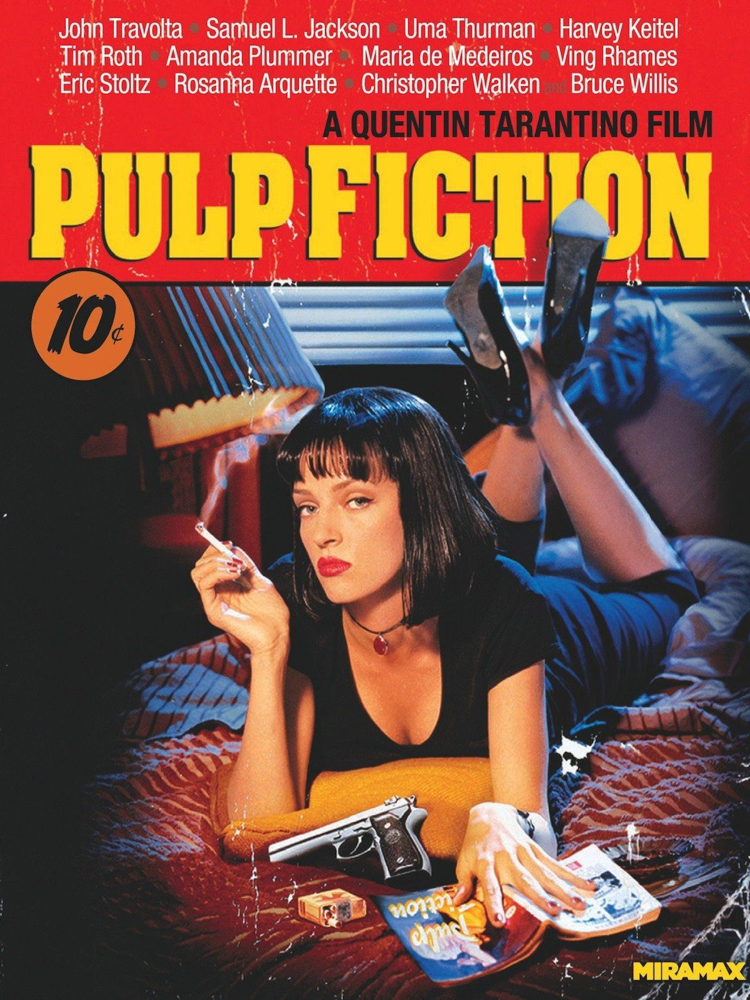
Pulp Fiction
Jules Winnfield (Samuel L. Jackson, Jackie Brown) y Vincent Vega (John Travolta, Grease) son dos asesinos a sueldo que trabajan a las órdenes del temido gángster Marsellus Wallace (Ving Rhames, Amanecer de los muertos), quien les encarga la importante misión de recuperar su misterioso maletín, que ha sido robado. Ahí empezarán todos sus problemas.
-
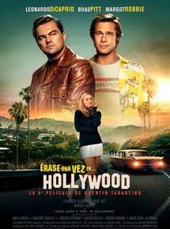
Érase una vez en Hollywood
Los Ángeles, 1969. Un año marcado por la guerra fría, la llegada al poder de Richard Nixon, el movimiento hippie, la era del amor libre, Woodstock, la llegada del hombre a la luna, además de la sangrienta masacre a manos de la secta de Charles Manson entre los que se incluyó el terrible asesinato a Sharon Tate, la mujer del director Roman Polanski que estaba embarazada y a dos semanas de dar a luz.
-
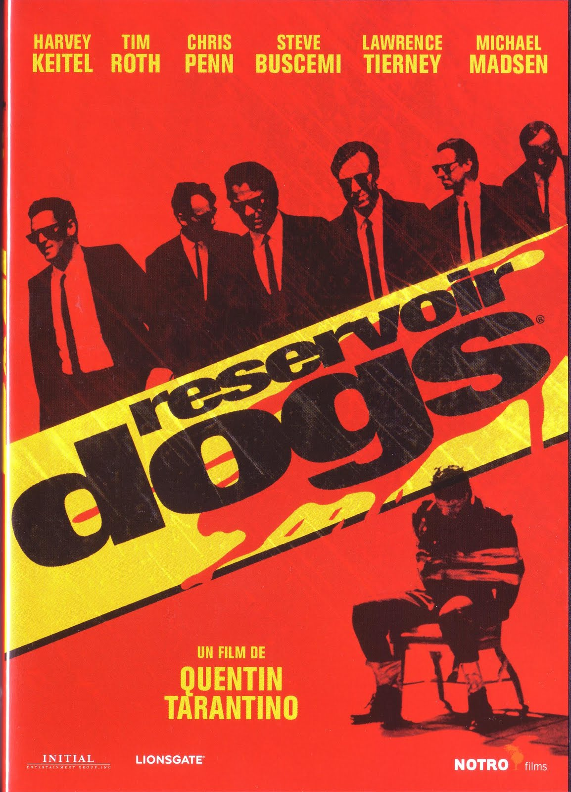
Reservoir dogs
Este thriller se desarrolla, principalmente, en un almacén. Una banda perteneciente al crimen organizado tiene la misión de entrar en una empresa y robar unos valiosos diamantes. Antes de que la alarma suene, la policía ya está en el lugar del delito, dando pie a un duro enfrentamiento y convirtiendo el almacén en el escenario perfecto para una masacre. Pero ¿qué es lo que ha salido mal? ¿Quién es el traidor?
-
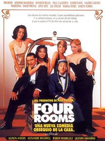
Four rooms
Four Rooms nos narra cuatro historias que tienen lugar en diferentes habitaciones de lo que, en su día había sido un gran hotel de Los Ángeles, en Nochevieja. Un grupo de brujas ocupan una suite nupcial para resucitar a su diosa. Un desequilibrado matrimonio se pelea a muerte. Ted tiene que cuidar a los hijos de un mafioso que son verdaderos demonios. El humorista más popular de Hollywood lleva a sus amigos a la suite presidencial.
-
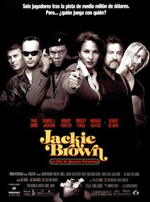
Jackie Brown
Jackie Brown trabaja como azafata de vuelo, y al mismo tiempo se dedica a multiplicar su precario sueldo haciendo contrabando de divisas para Ordell Robbie, un mafioso buscado por la policía. Pero un día, un agente de aduanas y un policía capturan a Jackie en el aeropuerto y la acusan de tráfico de drogas. A la protagonista solo le queda una salida: tendrá que ayudar y colaborar con la policía para que puedan encontrar al escurridizo Ordell Robbie. Solo de esta manera podrá evitar su ingreso en prisión.
-
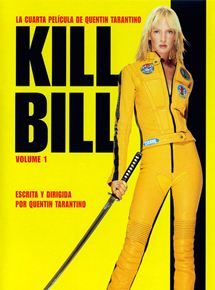
Kill Bill Vol.1
En plena celebración de su boda, la Novia sufre un ataque brutal que acaba con la vida de muchos de sus invitados y también del novio. Mamba Negra estaba embarazada y se sumerge en un largo coma que durará hasta cuatro años. Después de este trance, la Novia se despierta y recuerda lo ocurrido. Descubre desconsolada que ha perdido a su hijo y con él todo lo que más quería, así que la sed de venganza contra los responsables de aquella tragedia será infinita.
-
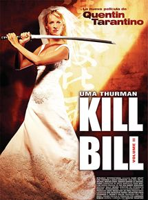
Kill Bill Vol.2
En esta secuela de 'Kill Bill Volumen I', la Novia continúa su venganza. Después de cinco años en coma, la “Mamba Negra” descubre con sorpresa que han querido asesinarla y que le han arrebatado al hijo que estaba esperando. Inicia entonces un plan para acabar con sus compañeros del Escuadrón de Serpientes Asesinas, que fueron quienes la traicionaron.
-
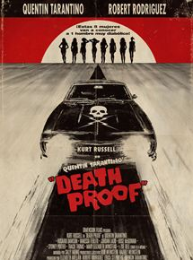
Death Proof
Por fin cuando acaba el día, Jungle Julia, la DJ más sexy de Austin, puede relajarse con sus mejores amigas, Shanna y Arlene. Este trío infernal, que vive de noche, atrae todas las miradas en todos los bares y discotecas de Texas. Pero la atracción que suscitan estas tres jóvenes no es forzosamente inocente. Así es como Mike, especialista con la cara marcada e inquietante, sigue sus pasos, agazapado en su coche indestructible. Mientras que Julia y sus amigas beben cervezas, Mike hace rugir el motor de su bólido amenazante...
-
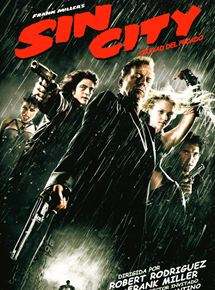
Frank Miller´s Sin City
Sin City es una ciudad que seduce a la gente. En ella viven policías tramposos, mujeres seductoras y vigilantes desesperados, algunos de ellos están en busca de venganza y otros en busca de redención. Uno de ellos es Marv (Mickey Rourke), un luchador que siempre ha llevado su vida a su propio modo.
-
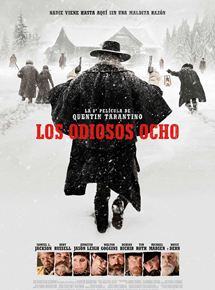
Los odiosos ocho
En algún lugar de Wyoming, pocos años después de la Guerra Civil Norteamericana, ocho variopintos personajes se encuentran atrapados en un refugio en las montañas a causa de un gran temporal de nieve. Entre ellos están el cazarrecompensas John Ruth (Kurt Russell), conocido en esas tierras como "The Hangman" (El Verdugo), y su prisionera Daisy Domergue (Jennifer Jason Leigh), que se dirigen hacia el pueblo de Red Rock donde Ruth pretende entregar viva a la fugitiva ante la justicia.
-
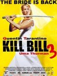
Kill Bill Vol.3
Diez años han pasado desde que La Novia (Uma Thurman, Pulp Fiction) cerrará un capítulo decisivo de su vida y comenzará de nuevo con su pequeña al lado. Con una feliz vida dejando a un lado la violencia, parece que la monotonía y tranquilidad les durará poco cuando una vieja amiga aparezca en escena buscando saciar su sed personal de venganza.